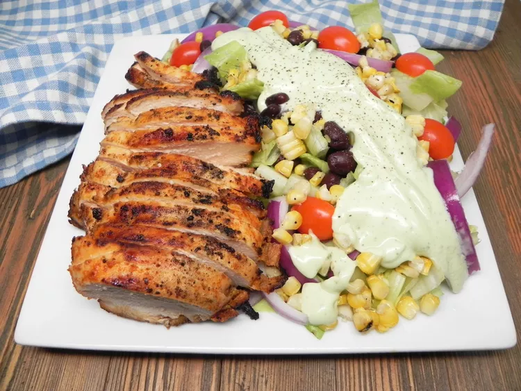

Southwest Chicken Salad

Romaine is topped with grilled chicken, corn, beans, tomatoes, and onions, and drizzled with a creamy avocado ranch dressing. This is one hearty salad that hits the spot all year around.
Ingredients
1 avocado - peeled, pitted, and chopped
2 tablespoons freshly squeezed lime juice
1½ (1 ounce) packet ranch dressing mix
2 (6 ounce) skinless, boneless chicken breast halves
1 ½ tablespoons fajita seasoning
1 medium ear corn, husk and silk removed
1 medium head romaine lettuce, chopped
½ cup halved grape tomatoes
1 (15 ounce) can black beans, rinsed and drained
½ small red onion, sliced into petals
Steps
- Combine avocado, sour cream, mayonnaise, water, lime juice, ranch seasoning, and salt in a food processor. Blend until smooth. Refrigerate until ready to use.
- Place the chicken in a bowl. Add olive oil and fajita seasoning. Toss until evenly combined.
- Prepare a grill over medium-high heat and lightly oil the grate. Add chicken and corn. Grill, turning once, until corn is tender and chicken is no longer pink in the center and juices run clear, about 10 minutes per side. An instant-read thermometer inserted near the center should read 165 degrees F (74 degrees C). Transfer to a cutting board.
- Divide romaine, tomatoes, black beans, and onions between two serving plates. Cut corn off the cob; divide between the two plates.
- =Slice chicken breast; divide between the 2 plates. Drizzle each salad with avocado dressing to serve.